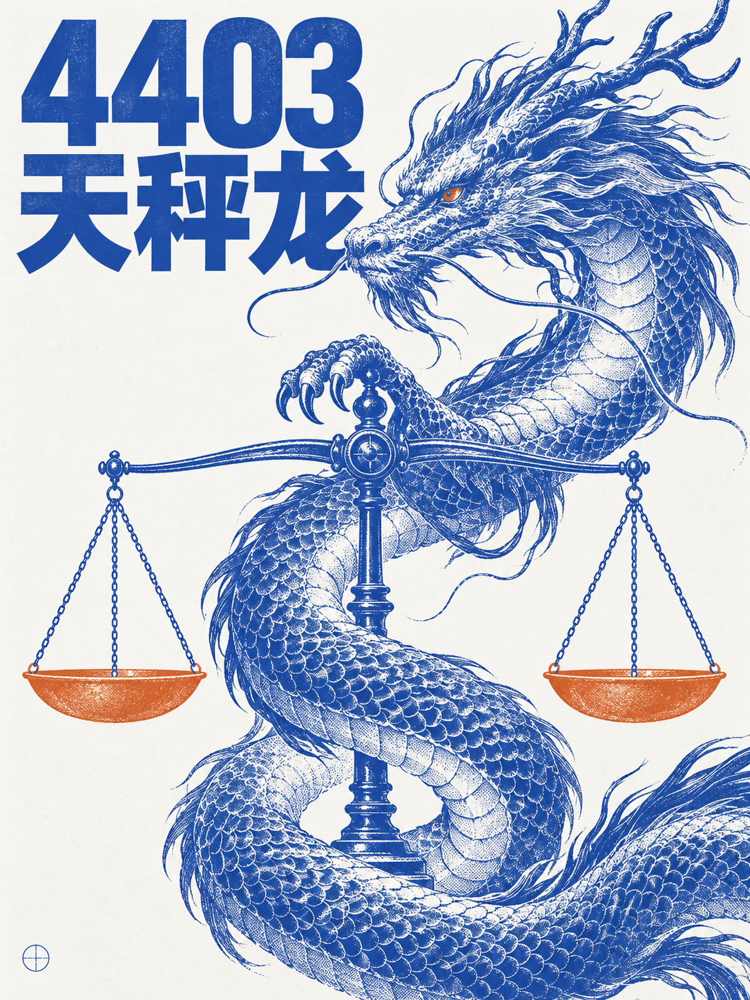
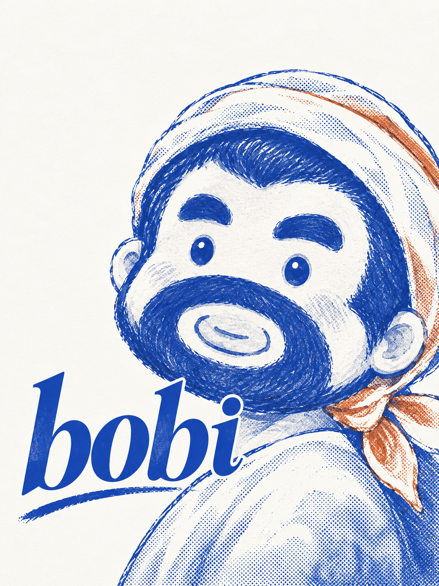
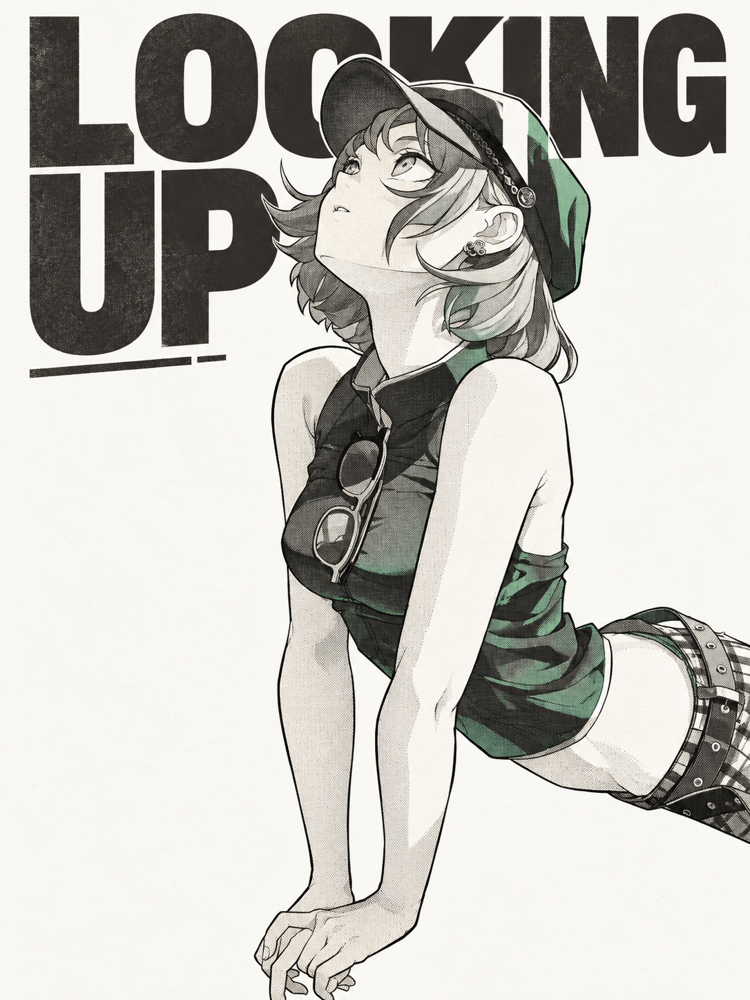
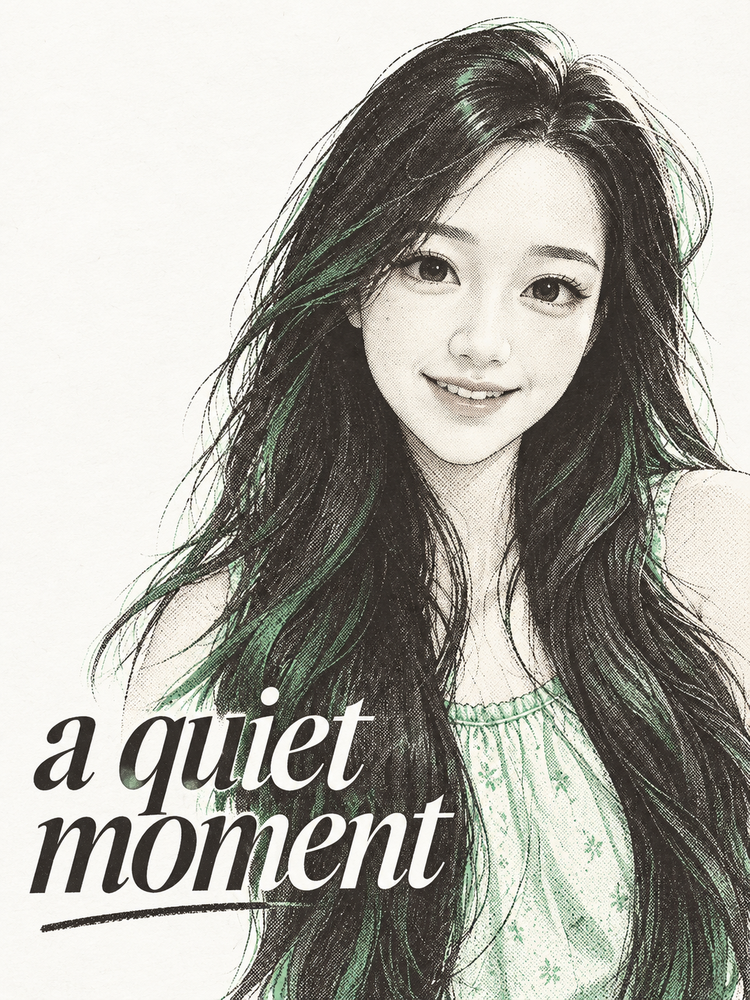

个人创作 · AI 辅助Always exploring.
精选作品
从城市的速度，到一个安静的表情。









少一点颜色，
多一点想象。
我喜欢画面里那些可以被触摸的感觉：纸张的纤维、油墨的浓淡，还有并不完全重合的边缘。
这里的实验从一个具体的对象开始：一辆车、一条龙，或者一个表情。先找到最值得被记住的部分，再让文字、颜色与留白围绕它展开。
这些作品以 AI 辅助完成，重点是探索视觉方向与编辑式排版。它们是持续积累的个人研究，不代表商业委托案例。
Less ink. More feeling.
从一个想法开始。
关于海报、图像或一次新的视觉实验，
期待下一种可能。